- 00 开篇词 Serverless是降本增效浪潮下的必然选择.md.html
- 00 思维构建 如何在新赛道下进阶Serverless能力？.md.html
- 01 生命周期：函数计算的基本流程是如何执行的？.md.html
- 02 触发器：如何构建事件源与函数计算的纽带？.md.html
- 03 高级属性：应对生产级别的应用，你需要掌握哪些技能？.md.html
- 04 冷启动：如何加快函数的第一次调用过程？.md.html
- 05 扩缩容：如何应对流量的波峰波谷？.md.html
- 06 流量转发：函数在不同情形下是如何执行的？.md.html
- 07 运行时（上）：不同语言形态下的函数在容器中是如何执行的？.md.html
- 08 运行时（下）：不同语言形态下的函数在容器中是如何执行的？.md.html
- 09 小试牛刀（一）：如何利用函数之间的调用解决业务问题？.md.html
- 10 小试牛刀（二）：如何突破VPC网络的速度限制？.md.html
- 11 WebIDE：如何让函数远离繁琐的本地开发模式？.md.html
- 12 编排：如何协调多任务的运行？.md.html
- 13 可观测（上）： 如何构建多维度视角下的Serverless监测体系？.md.html
- 14 可观测（下）： 如何构建多维度视角下的Serverless监测体系？.md.html
- 15 选型：不同阶段的数据应如何存储？.md.html
- 16 动手体验（一）：如何实现业务高效率地开发上线？.md.html
- 17 动手体验（二）：如何在云函数场景下实现一个有状态的服务？.md.html
- 18 实战指南：Serverless沙场老兵的一线使用经验.md.html
- 19 实战进阶（一）：Serverless “连接器” 的能力到底有多大？.md.html
- 20 实战进阶（二）：如何基于智能音箱开发一个BOT技能？.md.html
- 21 实战进阶（三）：传统的服务如何迁移到Serverless平台？.md.html
- 22 私有云：赛马时代的Serverless核心引擎谁能胜出？.md.html
- 23 实战进阶（四）：如何从0到1进阶一个开源引擎？.md.html
- 24 实战进阶（五）：如何从Serverless引擎蜕变成一个Serverless平台？.md.html
- 结束语 在实战中把握事物本质，不断革新.md.html
- 捐赠
19 实战进阶（一）：Serverless “连接器” 的能力到底有多大？
你好，我是静远。
在思维构建这节课，我提到了Serverless的基本构成是“FaaS + BaaS”。FaaS由于其轻便、灵活、开放的输入和输出，以及集成了众多云生态能力，同时也被云生态所集成的特性，被称为Serverless“连接器”的存在，也是当之无愧的。
那么，它的能力到底有多大？它又是如何与云产品连接，提供强有力的Serverless能力的呢？
今天这节课，我将为你讲解连接的方式和组合，并通过ETL的场景，依次递进，带你重识“连接器”的不同使用方式。
重识“连接器”
我们知道，任何单一云产品所提供的业务解决方案都是有限的，而云服务生态下“互相打通、互相连接”的能力，在很大程度上是业务上云的关键。
我们通常会根据实现方式，把函数计算的连接能力分为三类：触发器连接能力、访问VPC资源的能力、访问公网服务的能力。函数计算通过这些连接能力可以与整个云上的产品服务关联，从而形成一个完整的Serverless生态。
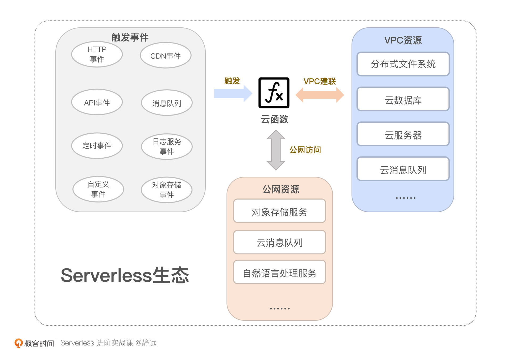
触发器的连接能力
说到触发器，我们并不陌生。触发器提供的是一种事件驱动的计算模型，充当的往往是一个桥梁的角色，将事件源的服务与函数连接起来。在第2节课，我们还详细梳理过一遍触发器的执行过程和实现原理。那么，你知道触发器的连接能力能够应用在哪些场景吗？
不同于触发器小节中的集成方式来分类，从场景应用层面来看，按照触发器的联动程度，我们可以把它划分为三大类，分别是云服务集成触发器、原生触发器、自定义触发器。
首先，我们来看云服务集成触发器。顾名思义，它是需要联动其他云服务才可以产生“连接”能力的一种场景。比如，我们熟悉的对象存储触发器可以用来进行一些音视频转码处理，当音视频文件上传后，可以通过触发器对函数进行调用，从而对其进行处理；消息队列触发器可以用来做一些异步消息的通知，当检测到消息队列内的数据发生变化时，也可以通过函数进行消费。
这种方式，要么是函数计算集成云服务的打通能力，要么是云服务集成函数计算的打通能力。通常来说，可以通过SDK/API提前对接好，按照服务之前约定的协议（如事件驱动、回调等方式）来互相联动。
那么，原生触发器呢？在这里，它指的是不需要借助其他云服务，自身即可实现的一类触发器。比如定时触发器仅需配置一个时间点，就可以让云函数实现一些定时邮件通知、定时天气预报之类的任务处理。
从联动性和场景使用程度看，原生触发器也可以包括HTTP触发器，但我更倾向于将把它作为一种延伸的访问云函数的能力，你可以通过HTTP触发器生成的链接作为的Web服务暴露的访问地址。
最后，大部分云厂商为了给用户提供更多的可能空间，通常还会提供自定义触发器的能力，允许用户接入任意云服务的事件，比如通过自定义触发器的方式，对接自研的资源存储或者服务等等。这也极大地丰富了函数计算的使用场景。
跨VPC的连接能力
函数计算另一个连接能力的体现，就是跨VPC的访问。通过VPC建联，能够让函数更加安全地访问用户的私有网络资源。
比如通过跨VPC，使得函数具备访问云数据库、云消息队列的能力，从而实现一个较为复杂的后台处理逻辑；另外，通过VPC的提前打通，可以将分布式文件系统直接挂载到函数实例上，使得云函数具备大文件处理的能力。
至于为什么提出VPC、跨VPC的意义以及如何优化函数在跨VPC场景的访问速度，你可以再回到第10课复习一下，加深记忆。
公网访问能力
部分云服务本身就暴露了公网访问接口，这类服务甚至不需要为云函数做任何配置，就可以访问。但云厂商为了安全考虑，同样地，需要设置鉴权和身份认证等保障机制。
我们在前面课程中提得最多的对象存储触发器，就可以无需配置VPC，直接访问；还有一些人工智能场景，比如自然语言处理、图像识别等，也完全可以通过直接访问公网接口来调用。
这里需要注意的是，通过VPC访问与通过公网访问的服务场景是有重叠的，这取决于服务本身支持哪种访问方式，比如阿里云的云消息队列Kafka就支持公网与VPC两种访问方式。
连接器的组合
无论是事件驱动还是主动请求，上面这几种连接能力并不是完全割裂的。在实际应用中，往往会通过不同的组合方式来实现一个完整的解决方案。
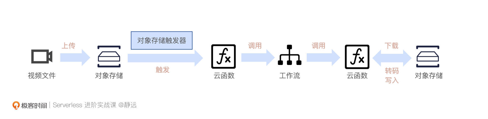
我们举2个例子。
还记得我们在16课动手体验中讲到的“通过工作流进行音视频转码”吗？这个问题，就可以通过触发器+公网访问的连接能力将工作流、对象存储和云函数关联起来。当一个或者多个视频上传到对象存储，通过触发器触发后，函数可以直接调用工作流进行批处理，然后按照分类转码的处理逻辑给视频转码，最后同步调用对象存储的接口，将转码文件进行写回。

还有，我们日常开发的Web应用或者小程序后台，也可以部署在云函数上。通过VPC让函数具备访问云数据库的能力，再配上HTTP触发器或者API网关，用户就能够非常方便的通过暴露的链接进行访问。
相信现在，你已经能够理解连接器的强大所在了。接下来，我就通过一个ETL场景的实战，带你切实感受一下连接器的强大。
ETL实战
在很多边缘计算的场景中，日志信息往往并不能做到实时上报，所以通常会采用定时上传日志文件的方式来进行后续的日志处理和分析。
比如我们最常见的车载日志，大量的车载终端源源不断地产生着行驶日志。实时分析这些行驶信息非常困难，一般都会是在收集到一定数量之后，以文件的形式整体上报。这样不仅可以提高日志传输效率，还能够对整体的日志文件进行暂存，方便后续的溯源。
连接器常规组合
对于这个处理过程，我的客户经常会采取对象存储触发器和消息队列，分别实现函数计算的输入和输出。下面是我给出的一个完整的流程示意图。接下来，我会借助阿里云相关云产品服务展开实验操作。
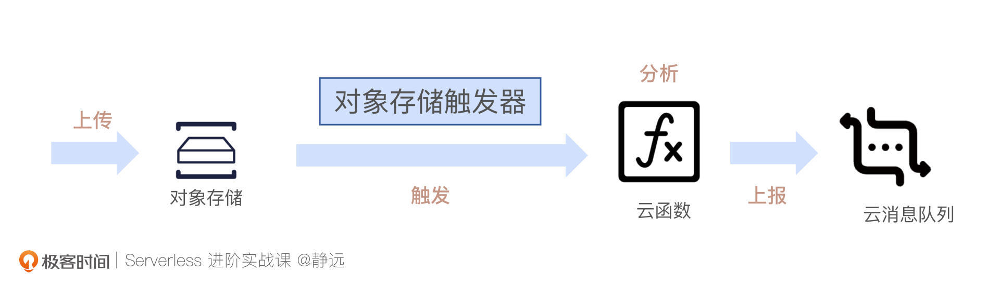
首先，为了接收上传的日志文件，我们需要提前在对象存储OSS上创建一个Bucket。同时，我们还需要在消息队列Kafka服务上创建一个实例，具体可以参考这篇快速入门文档。
接着，我在函数计算FC下，创建一个处理日志信息的云函数。还记得之前用到的函数模板吗？这里我们也可以选择Python3.6运行环境，选用“向消息Kafka投递消息”的模板来创建函数。至于和OSS交互的部分，可以参考OSS操作模板。
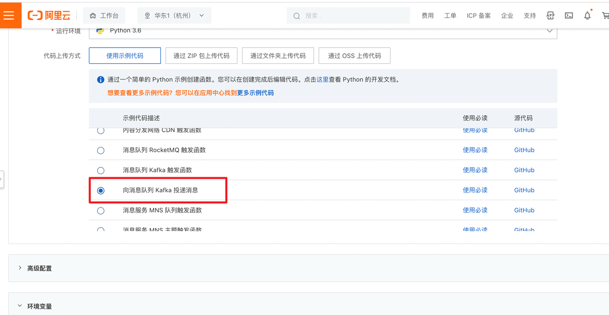
接着，我们需要为其配置Kafka访问的地址以及Topic，因为模板已经将其声明在环境变量当中了，我们可以直接在函数的环境变量中配置。
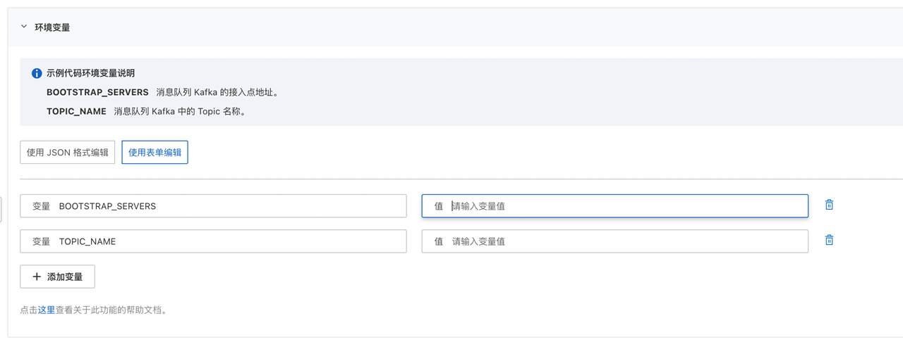
Kafka服务提供公网与VPC两种访问方式，如果通过公网访问的话，走SSL协议需要下载证书，会比较麻烦，这里我推荐你使用VPC进行访问，便于你快速实验。
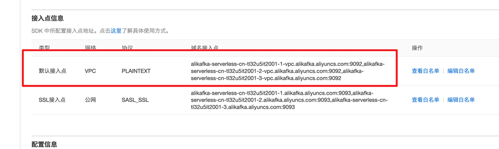
需要注意的是，VPC访问需要在函数所在服务下额外配置VPC，让函数服务与Kafka实例处于同一私有网络中。具体配置，你可以参考下面的图片：
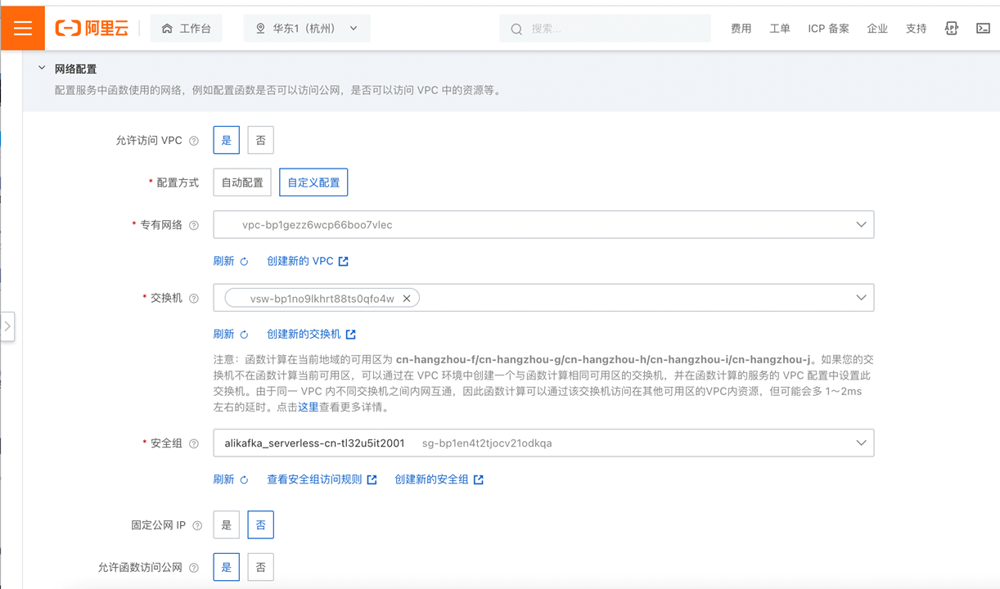
创建好函数以后，你还需要绑定一个OSS触发器，关联上刚才创建的bucket，前后缀可以根据你自己的业务需要设定。触发器的配置之前也带你体验过，这里我就不再重复了。
最后，结合我们的设计思路，来看看主要的代码处理逻辑吧：
from confluent_kafka import Producer
import logging
import sys
import os
import oss2, json
logger = logging.getLogger()
def initialize(context):
global p, TOPIC_NAME
""" Get the environment variables """
BOOTSTRAP_SERVERS = os.getenv("BOOTSTRAP_SERVERS")
TOPIC_NAME = os.getenv("TOPIC_NAME")
p = Producer({'bootstrap.servers': BOOTSTRAP_SERVERS})
def deliveryReport(err, msg):
""" Called once for each message produced to indicate delivery result.
Triggered by poll() or flush(). """
if err is not None:
logger.info('Message delivery failed: {}'.format(err))
raise Exception('Message delivery failed: {}'.format(err))
else:
logger.info('Message delivered to {} [{}]'.format(msg.topic(), msg.partition()))
def handler(event, context):
creds = context.credentials
# 设置权鉴，供 OSS sdk 使用
# Setup auth, required by OSS sdk
auth=oss2.StsAuth(
creds.access_key_id,
creds.access_key_secret,
creds.security_token)
# Load event content
oss_raw_data = json.loads(event)
# Get oss event related parameters passed by oss trigger
oss_info_map = oss_raw_data['events'][0]['oss']
# Get oss bucket name
bucket_name = oss_info_map['bucket']['name']
# Set oss service endpoint
endpoint = 'oss-' + oss_raw_data['events'][0]['region'] + '-internal.aliyuncs.com'
# Initiate oss client
bucket = oss2.Bucket(auth, endpoint, bucket_name)
object_name = oss_info_map['object']['key']
# 将日志文件下载到本地处理
bucket.get_object_to_file(object_name, "/tmp/tmp.log")
# 逐行读取
f = open( "/tmp/tmp.log", 'rb')
line = f.readline()
while line:
content=json.loads(line)
info = {}
# 提取关键信息
info['speed']=content['speed']
info['carID']=content['carID']
info_str = json.dumps(info)
line = f.readline()
# 发往kafka
p.produce(TOPIC_NAME, str(info_str).encode('utf-8'), callback=deliveryReport)
p.poll(0)
""" Flush the internel queue, wait for message deliveries before return """
p.flush()
f.close()
return {}
这段代码一共有3个要点，分别是资源初始化、输入数据的获取、数据结果输出。
首先，我们来看资源的初始化部分，在initialize 函数中会先完成全局的初始化操作，主要是Kafka的相关信息，这也是我建议你使用模板的原因，因为模板里面已经包含访问Kafka的依赖库了。
其次，是如何获取数据，处理并输出。我们来看handler的逻辑。因为在发生日志上传时，需要将文件下载到函数实例内处理，因此，这一步主要是初始化一个OSS的客户端。
最后，利用刚才创建的client以及event内的对象信息，我们可以调用client的接口将日志文件下载到本地。拿到日志文件之后，处理过程就简单了。你只需要遍历文件内容，提取关键信息，再推送到Kafka就行了。比如我这里提取的就是distance和carID，然后调用p.produce进行推送，供下游服务进行处理。
我们注意到，在p.produce函数存在一个callback的参数，因为deliveryReport是一个向Kafka发送消息后的回调函数，会根据发送结果输出一个提示信息。
之后，我们就可以测试一下上述的配置和代码是否能够正常运行了。我这里提前模拟了一个日志文件，里面的内容包含了一些基本的车辆行驶信息，我将其命名为driving.log并上传到了OSS。
{"speed":12,"carID":1234,"manufacturer":"BenZ","zone":"China","distance":102,"endAt":"Beijing","startAt":"Shanghai"}
{"speed":24,"carID":3512,"manufacturer":"BenZ","zone":"China","distance":102,"endAt":"Beijing","startAt":"Shanghai"}
完成上传后，我们观察一下函数的执行情况，可以看到确实已经触发执行了。
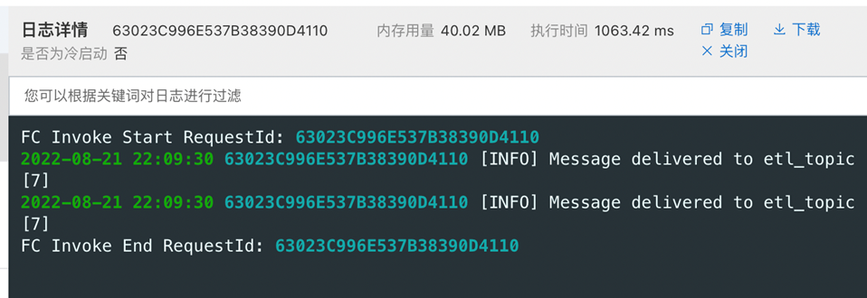
我们再看一下Kafka的监控，可以发现也有一定的写入量。
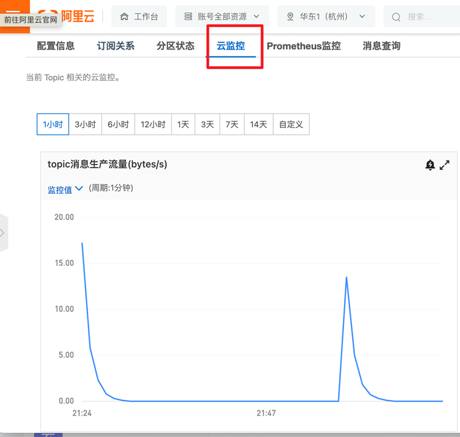
按照上面的步骤，你已经可以实现一个日志处理业务的基本功能了。如果你觉得不够完美，也可以更进一步优化一下代码的分层和鲁棒性，来用于你的生产环境中。
连接器延伸能力
那么，鲁棒性的提升除了我们自己的代码优化之外，函数计算作为连接器，是否本身也具备一些延伸能力来使得系统跟稳定和健壮呢？
我们知道，日志文件的触发是属于异步调用方式的，而异步调用还可以通过异步策略的配置来支持在异常情况下进行重试、分流处理，以确保数据的高可靠性。
也就是说，我们可以为刚才的函数设置超时时间。进入异步策略界面，我们可以根据异步执行结果配置策略，比如我配置的策略就是执行失败后调用下游的通知函数，上报任务失败的情况。你也可以按照你的实际需求进行配置。
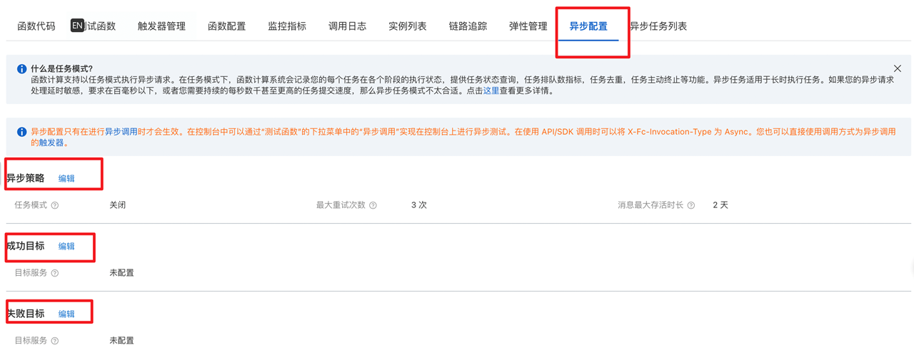
进阶ETL
通过上面的场景，我们了解了函数计算在解决日志数据分析问题时，连接其他云服务的方法和过程。在常规版的ETL实现中，日志文件一旦上传就可以通过OSS触发器让云函数进行处理，并将抽取转化处理的日志关键信息发往云消息队列服务，同时异步策略也为我们提供了额外的重试保障。
但有的时候，我们只是为了数据的暂存而选择了对象存储，那么，是否有一种方式，可以直接上传日志，而不需要额外占用对象存储的资源呢？答案是有的，拿阿里云的“连接器”函数计算FC来说，我们还可以采用日志服务SLS触发器。
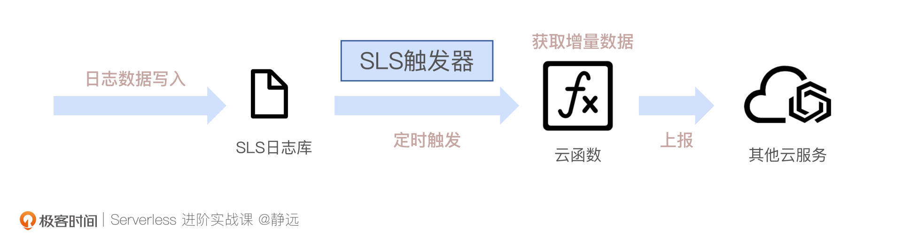
SLS触发器能够定时获取到日志的增量信息，而不用像对象存储触发器那样，每次将日志文件上传的时候才会触发ETL任务。
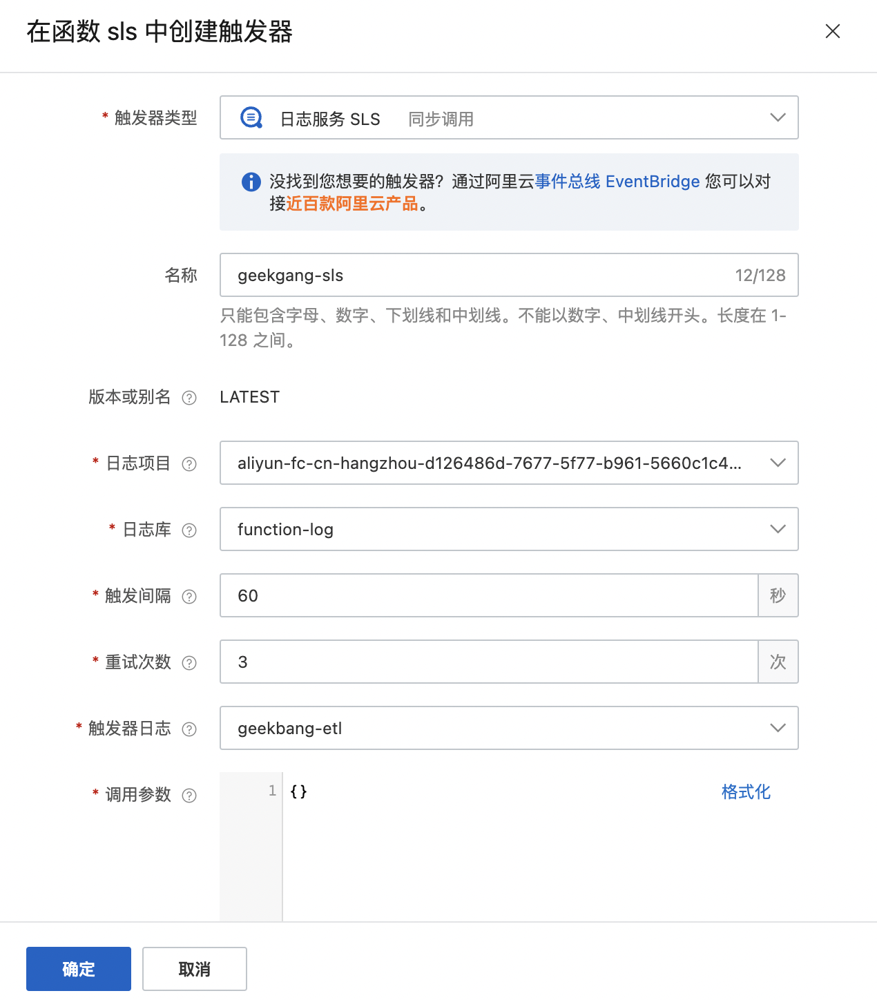
配置了触发间隔后，SLS触发器就会按时调用函数，并传入日志数据变化的游标。这样就可以直接获取变化的增量数据。
相比于OSS触发器，SLS触发器具有更加丰富的接入方案，你可以直接采集阿里云产品的日志，也可以通过Logstash、FluentD等开源软件采集日志，通过HTTP/HTTPS、Promethues等标准协议接入数据。
如果你的处理场景实效性不敏感，从性价比来说，采用小文件上传到OSS触发也是不错的选择。你可以根据实际的业务需要来进行综合考虑，最终选用什么样的方案更合适。
小结
最后我们来小结一下，今天这节课我跟你介绍了函数计算FaaS是如何扮演好Serverless“连接器”这个角色的。
它以具备的三大连接能力为基础，通过SDK/API、事件驱动等不同的方式，形成了“FaaS + 云服务”的Serverless新生态组合。正如你在ETL实战中看到的那样，通过对象存储触发器和消息队列的组合，5分钟不到的时间，轻松的玩转了日志分析处理开发和上线等一系列事情的全流程，而平时可能需要好几个小时才能完成。
触发器的连接能力，更像是“引流”的利器，通过被云服务集成或者集成云服务的方式，网罗了云上的各种“门客”，例如我们在上面示意图中展示的消息服务、文件存储、API网关、对象存储等。这些“门客”带来的数据等资源，在计算之后，也可以通过跨VPC和公网访问两大能力输送出去。
这样“输入”+ “计算” + “输出”高效快速的实现，不就是我们想要的“降本增效”吗？这样的粘合剂的功效，让云服务通过物理组合的方式发挥着巨大的化学反应，“连接器”的函数计算再一次通过它“胶水语言”的特性，证明了它自身的价值。
课后作业
好了，这节课到这里也就结束了，最后我给你留了一个课后作业。
这节课我带你通过一个ETL的场景体验了Serverless“连接器”的精髓，那么如何实现一个根据日志的关键指标信息发送报警邮件的功能呢？
欢迎在留言区写下你的思考和答案，我们一起交流讨论。
感谢你的阅读，也欢迎你把这节课分享给更多的朋友一起阅读。
© 2019 - 2023 Liangliang Lee. Powered by gin and hexo-theme-book.